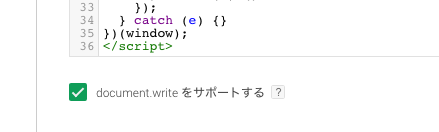
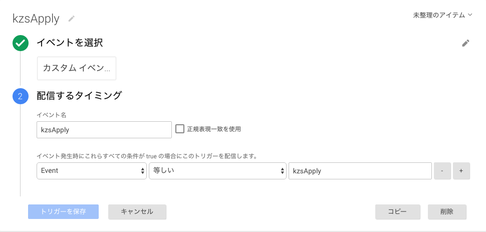

Table of Contents generated with DocToc
Kaizen Platform 連携(Google Tag Manager利用)
Google Tag Manager を利用し下記のタグを反映することにより、 USERDIVE にテスト情報を引き渡すことができます。
また、こちらの手順では Google Tag Manager が提供する dataLayer の機能を用いてテスト情報の引き渡しを行います。
必要なタグ
連携には、下記の3つのタグが必要になります。
Kaizen Platform スニペット
Kaizen Platfom の通常のスニペットと、下記のタグを合わせて設定します。 下記のコードで行われる主な役割は以下の2つです。
- Kaizen Platform がテストの内容を決定する
- 決定された情報を
dataLayerに対してevent名をkzsApplyとして登録
<script data-kz-key="XXXXXX"
data-kz-namespace="kzs"
src="https://cdn.kaizenplatform.net/y/XX/ZZZZZZZ.js"></script>
<script>
(function (root) {
try {
root.kzs = root.kzs || function () {
var _ = root.kzs;
return (_.q || (_.q = [])).push(arguments);
};
root.kzs('getVariation', function (data, state) {
var expId;
var varId;
try {
if (state === 'unmatched') {
root.dataLayer.push({
event: 'kzsApply',
kzsState: String(state)
});
} else if (state === 'decided') {
expId = data.expId;
varId = data.variationId;
root.dataLayer.push({
event: 'kzsApply',
kzsState: String(state),
kzsExpId: String(expId),
kzsVarId: String(varId)
});
}
} catch (e) {}
});
} catch (e) {}
})(window);
<script>
こちらのスニペットは Google Tag Manager 上で document.write を有効にする必要があります。

USERDIVE ロードタグ
USERDIVE ロードタグの反映が必要です。
<script>
(function(e,t,n,c,r,a,s,u){e.USERDIVEObject=r;e[r]=e[r]||function(){(e[r].queue=e[r].queue||[]).push(arguments)};
s=t.createElement(n);u=t.getElementsByTagName(n)[0];s.async=1;s.src=c;s.charset=a;u.parentNode.insertBefore(s,u)
})(window,document,"script","//harpoon3.userdive.com/static/UDTracker.js?"+(new Date).getTime(),"ud","UTF-8");
</script>
USERDIVE ロードタグは、 下記 Kaizen Platform/USERDIVE連携タグ よりも前に存在している必要があります。
Kaizen Platform/USERDIVE 連携タグ
Kaizen Platform 連携タグの反映には下記の2つが必要です。
Google Tag Manager上でトリガーに対し カスタムイベント を追加する - 下記のコードを配信するタグに登録し、トリガーを 作成したカスタムイベント のもので登録し、配信を行う
<script>
(function (userdiveId, root, kzsState, kzsExpId, kzsVarId, data) {
function getKzsState (dataLayer) {
var i;
try {
if (!dataLayer || !dataLayer.length) {
return {};
}
for (i = 0; i < dataLayer.length; i++) {
if (dataLayer[i].kzsState !== undefined) {
return dataLayer[i];
}
}
} catch (e) {} finally {}
}
function generateUrl (varId, state) {
var separator;
if (state !== 'decided') {
return;
}
separator = location.search === '' ? '?' : '&';
return location.protocol +
'//' +
location.host +
location.pathname +
location.search +
separator +
'_kzs_var_id=' +
varId +
location.hash;
}
data = getKzsState(root.dataLayer);
kzsState = data.kzsState;
kzsExpId = data.kzsExpId;
kzsVarId = data.kzsVarId;
root.ud('create', userdiveId, {
'overrideUrl': generateUrl(kzsVarId, kzsState),
'customVar': [kzsVarId, kzsExpId]
});
root.ud('analyze');
})('[ Project Id ]', window);
</script>
| Field | Type | Required | Description |
|---|---|---|---|
| [Project Id] | String | Yes | USERDIVE のプロジェクトIDです。 |
上記の連携に成功した場合
- USERDIVE上では
_kzs_var_idというパラメーター付きURLに対してデータの計測が開始されます - カスタム変数1 にて
expId、 カスタム変数2 にてvariationIdを利用したフィルターをかけることができます